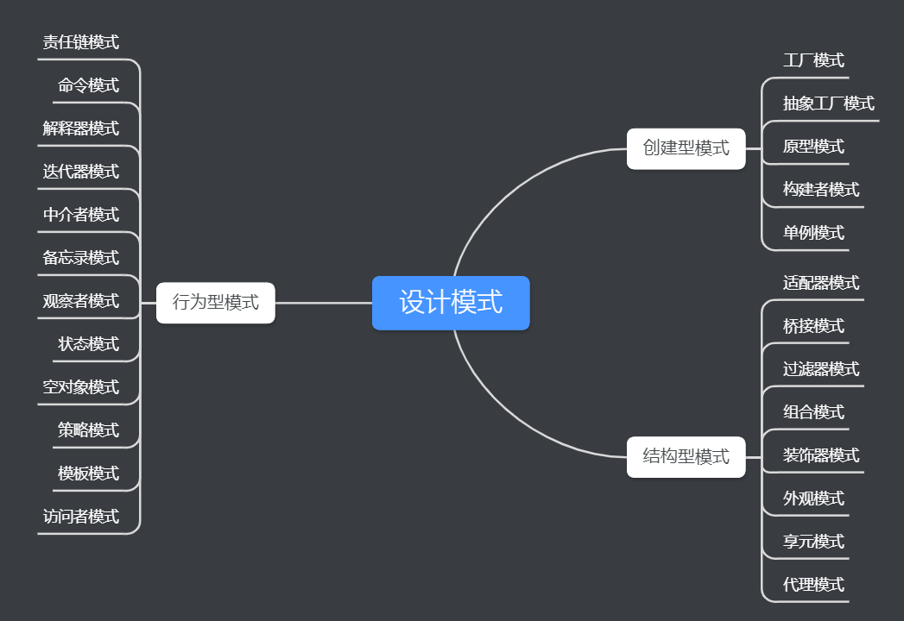

设计模式
1、什么是设计模式
设计模式就是软件设计中常见问题的典型解决方案，就像是预支的蓝图，可以对其进行自定义以解决代码中反复出现的设计问题。
1994年四位作者Erich Gamma、John Vlissides、Ralph Johnson 和 Richard Helm出版了《设计模式：可重用的面向对象软件的元素》。这本书中提出了23种设计模式，由于其名字很长，人们一般称之为“四人组的数”，也称”GoF书“；
一个对设计模式介绍比较详细深入的网站https://refactoring.guru/design-patterns，这篇博客的很多内容都有参考该网站，写这篇博客更多是个人对设计模式的一个梳理的总结；
设计模式可以按照其意图或目的来进行分类，本书主要涵盖了三组主要的模式：
- 创建模式：提供了对象的创建机制，增加了现有代码的灵活性和重用性；
- 结构模式：解释了如何将对象和类组装成更大的结构，同时保持结构的灵活性和效率；
- 行为模式：负责对象之间的有效沟通和指责分配；
每种类型的设计模式又可以根据具体的情景分成不同具体的类型，如下图所示：

设计模式主要遵循的两个原则，一个是开闭原则，即对拓展开放，对修改关闭；另一个是单一职责原则，即一个设计模式只解决一个问题；
2、创建模式
工厂方法模式
问题：真实场景中，会存在很多类型的产品，这些产品可以通过继承父类来拓展成不同的子类（animal，dog，cat）。如果是通过new来创建对象，当增加新的产品类型时，不可避免的需要修改代码，这违反了开闭原则；
解决方案：使用工厂方法来创建对象，将不同产品的创建交给不同的工厂对象来实现，不再使用一个工厂完成所有产品的创建；工厂不仅负责产品的创建，还负责产品的核心逻辑处理，这样可以复用产品的处理代码，而不用每一个产品都重新实现一遍处理逻辑；

* 使用场景：
* 在编写代码时，无法预知对象的确切类别或依赖关系，可以使用工厂方法将对象的创建和使用代码分离；
* 希望用户能够拓展软件库或框架的内部组件；
* 希望能够复用现有对象来节省系统资源，而不是每次都创建新对象；
抽象工厂模式
- 问题：当需要生产一系列风格相同的产品时，需要保证产品的风格相同；
- 解决方案：将产品的生产交给工厂，每类工厂负责固定风格的产品；

生成器模式
- 问题：当对象非常复杂时，对象的构造需要对繁多的成员变量和嵌套的对象进行初始化，同时由于需求不同，这些成员变量和嵌套的对象的初始化是可选的；
- 解决方案：将对象的构造代码抽取出来，放在一个独立的生成器对象中；同时可以将用于创建产品的生成步骤独立出来，用主管类来控制；

- 使用场景：
- 对象较为复杂时，不希望导致大量重叠的构造函数；
- 希望创建不同类型的产品，产品的构造流程相似，但细节上有区别；
原型模式
- 问题：如果只有一个对象，希望生成一个完全相同的对象；但很多时候对象内部的成员变量是对外不可见的，或者对象所属的类不可见；
- 解决方案：在原型中增添一个克隆方法，返回一个与当前对象完全一样的新对象；

适用场景：
- 希望能够复制对象，又希望这些对象能够独立所属的类；
- 当子类的区别仅在于对象的初始化方式，可以通过预生成的一系列对象来减少子类的数量；
单例模式
- 问题：不希望一个类有多个实例，同时还要为该实例提供全局访问节点；
- 解决方案：将默认的构造函数设为私有，同时新建一个静态成员函数作为构造函数，该函数调用私有构造函数来实现初始化；
3、结构型模式
适配器模式
- 问题：两个对象的格式不一样，相互之间无法调用；
- 解决方案：新建一个适配器对象，在两个对象之间进行格式转换；
桥接模式
问题：在继承时，多个维度上的子类同时糅合在一起，导致需要为每个维度上的子类两两组合；（各个设备和各个设备控制器；）
解决方案：将某些维度的子类抽取成独立的抽象类，各不同的子类仅是抽象类的不同实现，从而在对象中直接引用抽象类；
适用场景：
- 拆分或重组一个具有多重功能的庞杂类；
- 在几个独立的维度上拓展一个类
- 在运行时切换不同的实现方式
组合模式
- 问题：对于树状结构对象，即当一个对象包含成员及同类对象，如何对该对象进行处理；例如盒子中有物品和其他盒子；（组合图形的绘制）
- 解决方案：实现一个通用的接口，不管是什么对象，直接调用接口即可；

装饰模式
- 问题：希望在不需要更改代码的情况下使用对象，同时需要为对象增添新行为；或者无法通过继承修改类的行为；（数据的写入和读取，写入之前时候加密和压缩）
- 解决方案：封装器是装饰模式的别名，即通过设计与原始对象相同接口的封装器类，并在该类中调用原始对象；
外观模式
- 问题：用到了复杂的第三方库或框架中的对象，但客户只需要使用其中部分功能；（视频的下载和观看）
- 解决方案：创建外观类，对外提供统一的接口；
享元模式
- 问题：程序需要类型相似的巨量对象，同时在各个对象中存在大量的重复状态；（游戏中粒子的颜色模式都是相似的）
- 解决方案：对于重复的状态不存放在对象中，而是存放在一个单独的对象中；
代理模式
- 问题： 延迟初始化，访问控制，远程调用，请求结果缓存
- 解决方案：建立与原对象具有相同接口的代理类，客户端代码直接使用代理类对象即可；
4、行为模式
行为模式包括责任链模式（在线订购系统的验证授权），命令模式（文字编辑器按钮的各种功能），迭代器模式（集合元素的访问），中介者模式（UI组件），备忘录模式（文件的撤销功能），观察者模式（消息队列的订阅和发布），状态模式（有限状态机），策略模式（地图路线选择），模板方法模式（文件的处理中大量相似的算法），访问者模式（文件导出）；